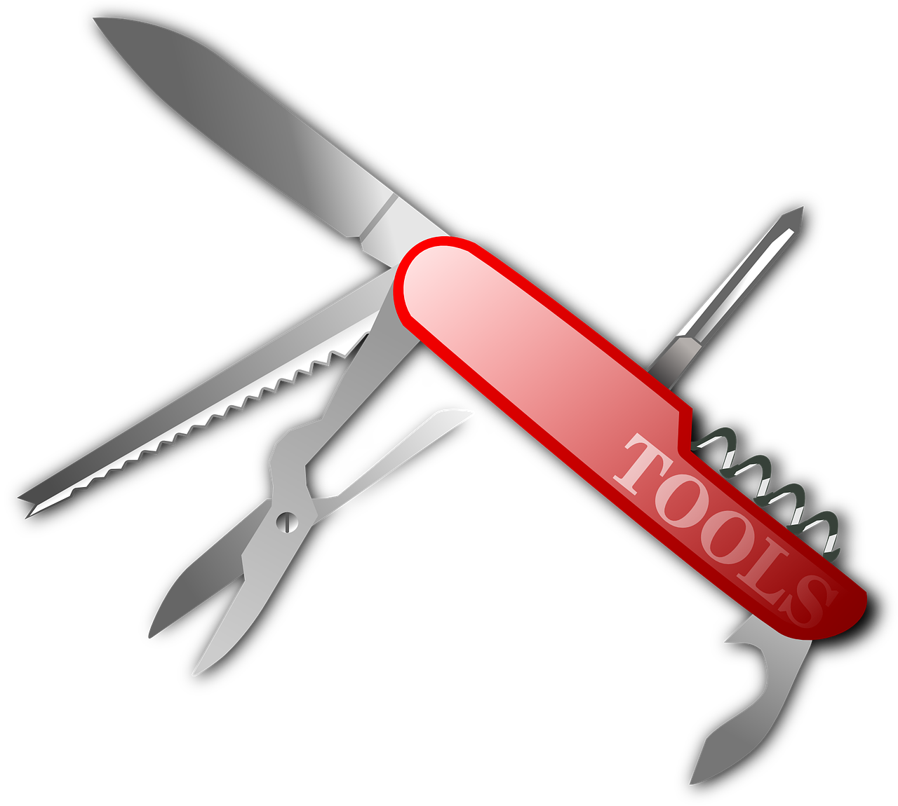

Opa! aqui estão algumas dicas extras
Aqui (no botão abaixo) segue um video de como montar sua fogueira
Contrução rapida de abrigo(caso não tenha muito tempo para fazer um)

Consiguindo agua na natureza
Maneiras de encontrar/conseguir água potavel